MULTICELL BEAMS
BENDING
When determining the bending stresses, there is no difference if the section is multicell or not because for bending only the boom areas are used. So in order to do this calculation just use the equations derived in section : Bending of Beams with non-symmetrical Cross Sections.
TORSION
Look at a wing section made of 'N' cells carrying a torque 'T'.
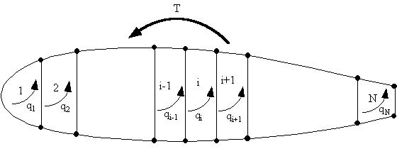 |
Figure 80: Multicell wing structure with applied torque T |
The torque T, generates individual torques in each cell, the sum of which must equal T, so:
$$ T = T_1 + T_2 + ... + T_N = Σ_{i=1}^N T_i $$But a torque in a closed cell (beam section) produces a constant shear flow, given by :
$$ T_i = 2 A_i q_i $$Substituting this gives:
$$T = Σ_{i=1}^N 2 A_i q_i $$However since we have 'N' cells this equation is statically indeterminate, so we need a compatibility relationship.
Effect of Booms on Shear Flow Distribution
Look at an elemental section of wing of length z, where three skin sections are in contact with a boom of area B, Figure 81.
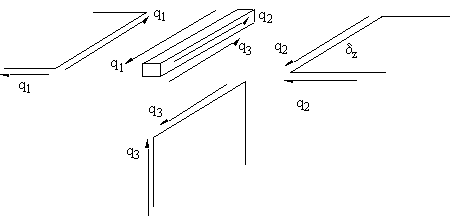 |
Figure 81: Equilibrium of boom/skin/web junction |
At this boom/skin/web junction, the shear flows must all be in equilibrium. The element δz of the boom experiences forces only produced by shear flows because no direct stresses are present. Therefore the booms don't affect the analysis in pure torsion
.Summing the forces along boom gives: $$ Σ F_{boom} = 0 = q_1 δz - q_2 δ z - q_3 δ z $$
which simplifies to:
$$ q_1 = q_2 + q_3 $$If no booms are present a similar relationship is obtained.
This equation means that the sum of the shear flows into a junction must equal the sum of the shear flows out of the junction. This is similar to fluid flow in a multi pipe system. Which is why we use the term shear flow.
Compatibility Equation for Each Cell
Due to the ribs in aircraft wings, the rate of twist is constant for all cells in the section. So look at the rate of twist of cell i in the wing section of Figure 80 . The twist rate equation then becomes for cell i equal to:
$$ {dθ_i}/{dz} = 1/{2A_i} ∮ {q_{si}}/{G_i t_i} .ds $$In order to derive the rate of twist for cell i, it is necessary to look at the three cells: i - 1, i and i + 1, and determine the bound integral at cell i of the twist rate equation.
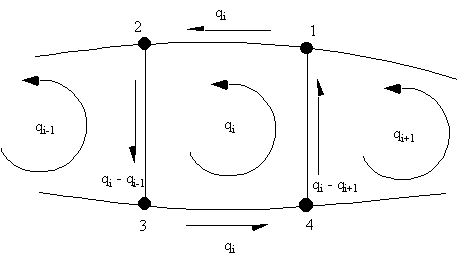 |
Figure 82: Shear flow distribution in the ith cell of an 'N' cell wing beam section |
Let :
$$ Δ = ∫_L 1/{Gt}.ds = {\text"Length of wall"}/{\text"Shear Modulus " × \text" thickness of wall" } $$It is now necessary to determine the rate of twist for cell i giving:
$$ {dθ}/{dz} = 1/{2A_i} ( q_i Δ_{1-2} +(q_i - q_{i-1}) Δ_{2-3} + q_i Δ_{3-4} +( q_i- q_{i+1})Δ_{4-1} ) $$Rearranging this gives:
$$ {dθ}/{dz} = 1/{2A_i} ( -q_{i-1} Δ_{2-3} + q_i (Δ_{1-2} +Δ_{2-3} + Δ_{3-4} + Δ_{4-1} ) - q_{i+1} Δ_{4-1} ) $$and in general terms for the configuration of Figure 82, the rate of twist equation for cell i becomes:
$$ {dθ}/{dz} = 1/{2A_i} ( -q_{i-1} Δ_{i-1,i} + q_i Δ_{i} - q_{i+1} Δ_{i+1,i} ) $$where:
Δi-1,i = length of wall common with the cell i and i-1 cell
divided by the multiple of its thickness times its shear modulus
Δi
= Sum of all Δs for cell i
Δi+1,i = length of wall common with the i and i+1 cell divided by the multiple of its thickness times its shear modulus
With the rate of twist equation for all cells in the structure and the torque equation, you can solve them simultaneously to determine the value of the shear flows in the structure.
Example :
Calculate shear stress distribution in the walls of the 3 cell wing section subjected to a positive torque of 12000 kNmm
|
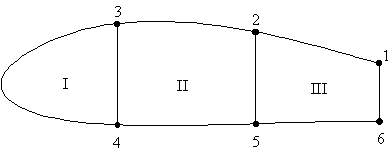 |
|
Figure 83: Three cell wing section loaded by a pure torque |
Where the cell areas are : AI = 258000 mm2, AII = 355000 mm2, AIII = 161000 mm2
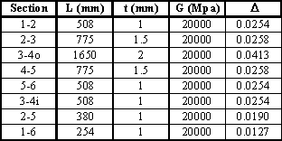 |
Figure 84: Table where D is calculated |
Determine the rate of twist of all cells:
$$ {dθ}/{dz} = 1/{2A_i} ( -q_{i-1} Δ_{i-1,i} + q_i Δ_{i} - q_{i+1} Δ_{i+1,i} ) $$For cell I
$$ {dθ_I}/{dz} = 1/{2 × 258000} ( q_{I}(0.04125 + 0.0254) - 0.0254q_{II} ) $$For cell II
$$ {dθ_{II}}/{dz} = 1/{2 × 355000} ( -0.0254 q_{I} + q_{II} (0.02583 + 0.0254 +0.02583 + 0.019) - 0.019 q_{III} ) $$For cell III
$$ {dθ_{III}}/{dz} = 1/{2 × 161000} ( -0.0254 q_{II} + q_{III} (0.0254 + 0.019 +0.0254 + 0.0127)) $$And from equation for Torque
$$ 12 × 10^6 = 2(258000q_I + 355000q_{II} + 161000 q_{III}) $$These four equations can now be solved simultaneously to give the shear flows. This is done in the following way: $$ {dθ_I}/{dz} = {dθ_{II}}/{dz} --> 2342.2 q_I - 2620.34 q_{II} + 380 q_{III} = 0 $$
and
$$ {dθ_I}/{dz} = {dθ_{III}}/{dz} --> 1333.2 q_I - 100.1 q_{II} - 2644.1 q_{III} = 0 $$Solving the above three equations simultaneously gives:
qI = 8.6923 N/mm, qII = 8.4515 N/mm, qIII = 4.7021 N/mm
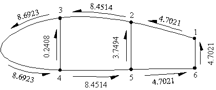 |
Figure 85: Shear flow distribution in three cell wing section with applied torque |
Note: By dividing the above values of shear flow by the respective wall thickness, gives the Shear Stresses in the walls in MPa.
SHEAR LOADS
To determine the shear flow distribution in a multicell beam we use the same analysis as for a single close cell beam.
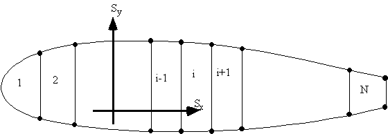 |
Figure 86: Multicell wing section with applied shear loads |
Because a single closed beam is a statically indeterminate structure, we need to cut it in order to determine the shear flow due to an open beam section, then determine the cut skin sections shear flow, qs0, add this to the open beam shear flow and determine the true shear flow experienced by the section.
A multicell wing section can be made statically determinate by cutting a skin panel in each cell. The best place to cut the cells is always at the centre of the top or bottom skin panels.
The reason for this is that when a cell is loaded vertically, the shear flows are zero at these positions, so that when determining the cut section shear flow its value will be close to zero, minimising numerical errors.
If we do this to our idealised wing section, then that panel's shear flow would be zero. If that section was symmetrical, the bottom panel will also have a zero open cell shear flow. The section will look like this:
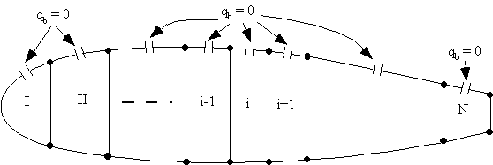 |
Figure 87: Multicell wing structure loaded by shear loads, indicating the best location for cutting the cell. |
The shear flow equation for an idealised beam close section subjected to shear loads was found previously and was given by the following equations.
$$ q_i = q_{i-1} + Δq_k $$ $$ Δ q_k = - {S↖{-}_y}/{I_{xx}} B_k y_k - {S↖{-}_x}/{I_{yy}} B_k x_k $$ $$ q_{si} = q_{s0} + q_{bi} $$where qb is the cut section shear flow and qbi is the open beam shear flow
.By using these equations the open section shear flow distribution can be found in the multicell wing section. However there remain N number of unknown values of shear flows at each of the cuts, ie: qs0,i, i = I to N, which are constant for each cell, shown in Figure 88.
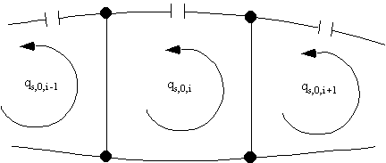 |
Figure 88: Redundant shear flow in the ith cell of N cell wing structure loaded in shear |
From equation for the rate of twist for ith cell:
$$ {dθ_i}/{dz} = 1/{2A_i} ∮_i q_{si}/{G_it_i} .ds $$Substituting gives:
$$ {dθ_i}/{dz} = 1/{2A_i} ∮_i {(q_b +q_{s0i})}/{G_it_i} .ds $$but because qs0i is a constant, then this term in the integral is similar to that of the compatability equation, thus giving:
$$ {dθ_i}/{dz} = 1/{2A_i} ( -q_{s0i-1}Δ_{i-1,i} + q_{s0i}Δ_i - q_{s0i+1}Δ_{i+1.i} + ∮_i {q_{bi}}/{G_it_i} .ds $$where as before:
$$ Δ = ∫_L 1/{Gt}.ds = {\text"Length of wall"}/{\text"Shear Modulus " × \text" thickness of wall" } $$where the bound integral term of the above equation can be represented in summation of the open beam shear flow multiplied by Δ for all the skin sections surrounding cell i, the equation becomes :
$$ ∮_i q_b/{Gt} .ds = Σ_{k=1}^N q_{bk_i} Δ_{k_i} $$where:
ki = Skin segment around cell iand the compatibility equation is then that as for previous section:
$$ {dθ_1}/{dz} = {dθ_2}/{dz} = {dθ_3}/{dz} = \text". . ." {dθ_N}/{dz}$$Using the above equations for all cells, (N - 1) equations can be generated, requiring 1 more to make N equations to solve for the unknown qs0i's. The extra equation is found by considering the moment equilibrium of all cells.
Look at the ith cell, the moment Mqi produced by the total shear flow about some point '0' is as follows:
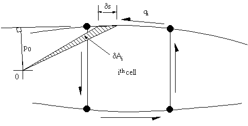 |
Figure 89: Moment equilibrium of ith cell |
The moment about point 0 due to cell i is given by:
$$ M_{qi} = ∮ q_i p_0 .ds $$substituting gives:
$$ M_{qi} = ∮ (q_{s0} + q_b) p_0 .ds $$which simplifies to:
$$ M_{qi} = ∮ q_b p_0 .ds + 2 A_i q_{s0i} $$The sum of the moment of the individual cells is equal to the moment produced by the applied loads so:
$$ Σ \text"Moments of applied loads about a point O" = Σ_{i=1}^N ∮_i q_b p_0 .ds + Σ_{i=1}^N 2 A_i q_{s0i} $$And if moments are taken about the point where the loads are applied then:
$$ 0 = Σ_{i=1}^N ∮_i q_b p_0 .ds + Σ_{i=1}^N 2 A_i q_{s0i} $$Example :
The following wing section carries a vertical load of 80 kN in the plane of web 3-4, determine the shear flow distribution and the rate of twist. Boom areas, B1-6 = 2580 mm2, B2-5 = 3880 mm2, B3-4 = 3250 mm2.
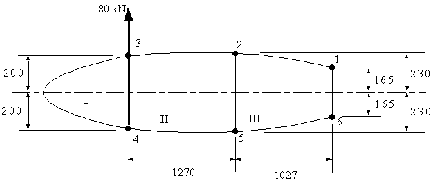 |
Figure 90: Idealised wing section with applied vertical shear load |
Where the cell areas are AI = 256000 mm2, AII = 560000 mm2, AIII = 413000 mm2
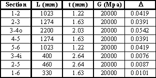 |
Figure 91: Table with calculated Δ |
1) Determine sectional properties:
Because the section is symmetrical we only need Ixx = 810.99 ×106 mm4
2) Determine the open section shear flow by cutting the top skin panels, like this:
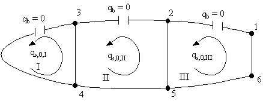 |
Figure 92: Three cell wing section cut to determine open beam shear flows |
Using equations for open beam shear flows these were calculated in the table of Figure 93.
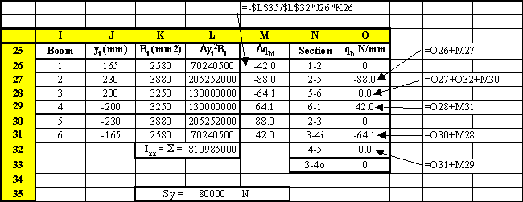 |
Figure 93: Table where the open beam shear flows were calculated |
The shear flow distribution in the open beam section looks like this:
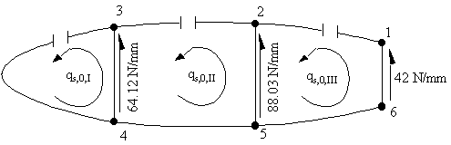 |
Figure 94: Idealised wing section showing open beam shear flows |
3) Determine rate of twist ${dθ}/{dz}$ for each cell :
$$ {dθ_i}/{dz} = 1/{2A_i} ( - q_{s0i-1} Δ_{i-1,i} + q_{s0i} Δ_i - q_{s0i+1} Δ_{i+1,i} + ∮_i q_b/{Gt} .ds ) $$For Cell I
$$ {dθ_I}/{dz} = 1/{2 × 256000} ( - q_{s0I}( 0.0542 + 0.0076) - q_{s0II}(0.0076) + 64.12 × 0.0076 ) $$For Cell II
$$ {dθ_{II}}/{dz} = 1/{2 × 560000} ( - q_{s0I}(0.0076) + q_{s0II}(0.0391 + 0.0076 + 0.0391 +0.0087) -q_{s0III} (0.0087) - 64.12 × 0.0076 + 99.03 × 0.0087) $$For Cell III
$$ {dθ_{III}}/{dz} = 1/{2 × 413000} ( - q_{s0II}(0.0087) + q_{s0III}(0.0419 + 0.0087 + 0.0419 +0.0101) - 88.03 × 0.0087 + 42 × 0.0101) $$Because all rates of twist are the same we can now equate them together:
$$ {dθ_I}/{dz} = {dθ_{III}}/{dz} --> 1436.5 a_{s0I} - 2 q_{S0II} + 2053.7 q_{s0III} = - 18127.4 $$ $$ {dθ_I}/{dz} = {dθ_{II}}/{dz} --> 2853.5 a_{s0I} - 2220.3 q_{S0II} + 174.2 q_{s0III} = - 15629.1 $$4) Equate moments about the point of application of load gives:
$$ 0 = 2 (246000 q_{s0I} + 560000 q_{s0II} + 413000 q_{S0III} ) + 88.03 × 460 × 170 + 42 × 330 (1027 + 1720) $$which simplifies to:
$$ 512000 q_{s0I} + 1120000 q_{s0II} + 826000 q_{s0III} = - 83263546 $$Solving these 3 equations simultaneously gives:
qs0I = - 38.31 N/mm, qs0II = -43.61 Nm and qs0III = -17.93 N/mm
Superimposing these shear flows with the open beam values gives:
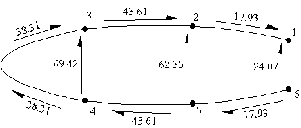 |
Figure 95: Wing section with final shear flows |
5) Determine rate of twist:
By substituting these values into any of the rate of twist equations we can find it to be :
${dθ}/{dz}$ = -3.0273 × 10-6 rad/mm = -0.1734 × 10-3 Deg/mm
SHEAR CENTRE
The position of the shear centre is found in an identical manner to that of section for open beams. Arbitrary loads Sy and Sx are applied in turn through the shear centre s.c., the corresponding shear flow distributions determined and moments taken about some convenient point.
The shear flow distributions are found as described in the previous section, except that the N equations derived in previous section are enough to determine the unknown shear flows. This is because the rate of twist of a beam loaded at the shear centre is zero, ($ {dθ}/{dz} = 0 $).